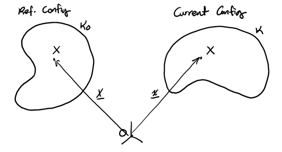
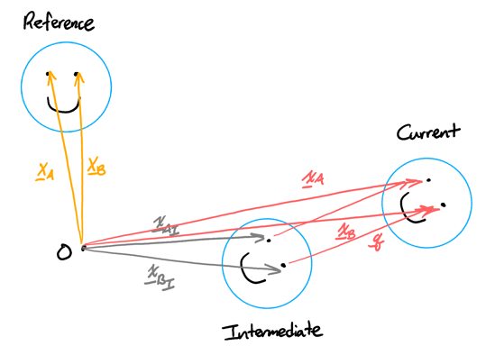
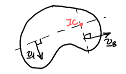

Rigid Body Kinematics
Table of Contents
1. Tensors
Tensors are a mathematical object defined by its action on vectors and is independent of any basis. When a basis is chosen, we can represent it using a matrix. Tensors represent a linear transformation.
1.1. Tensor Products
For two vectors \(\mathbf{a}\) and \(\mathbf{b}\), the tensor product \(\mathbf{a} \otimes \mathbf{b}\) is defined such that:
\begin{align} (\mathbf{a} \otimes \mathbf{b})\mathbf{c} = (\mathbf{b} \cdot \mathbf{c})\mathbf{a} \end{align}for any vector \(\mathbf{c}\). It can be shown that the tensor product follows linearity: thus, the tensor product yields a tensor.
If \(\mathbf{a}\) and \(\mathbf{b}\) are unit vectors, then applying \(\mathbf{a} \otimes \mathbf{b}\) to a vector is equivalent to taking the component of the vector along \(\mathbf{a}\) and moving it to be along \(\mathbf{b}\).
2. Rigid Bodies
Consider a body \(B\) in motion:

\(X\) is a material point on a rigid body. When a body moves, we define the reference configuration \(\kappa_O\) to be its initial state, and the current configuration \(\kappa\) to be its current state. Then, \(\mathbf{X}\) is the position vector of \(X\) in \(\kappa_O\), and \(\mathbf{x}\) is the position vector of \(X\) in \(\kappa\).
A rigid body is a body in which the distance between any two material points remains perfectly constant over time, and whose motion can be completely evaluated as a combination of translation and rotation:2

We can represent the position vector of the current configuration \(\mathbf{x}\) like so:
\begin{align} \mathbf{x} = \mathbf{Q}\mathbf{X} + \mathbf{q} \end{align}where \(\mathbf{Q}\) is a rotation tensor and \(\mathbf{q}\) is a translation vector. For any two material points \(A\) and \(B\) on the rigid body, their rotation tensor and translation vector are the same:
\begin{align} \mathbf{x}_A &= \mathbf{Q}\mathbf{X}_A+\mathbf{q} \notag \\ \mathbf{x}_B &= \mathbf{Q}\mathbf{X}_B+\mathbf{q} \notag \end{align}Taking the derivative, we get velocity:
\begin{align} \mathbf{v}_A &= \dot{\mathbf{Q}}\mathbf{X}_A+\dot{\mathbf{q}} \notag \\ \mathbf{v}_B &= \dot{\mathbf{Q}}\mathbf{X}_B+\dot{\mathbf{q}} \notag \end{align}Taking the difference of each, we have:
\begin{align} \mathbf{x}_B - \mathbf{x}_A &= \mathbf{Q}(\mathbf{X}_B-\mathbf{X}_A) \notag \\ \mathbf{v}_B-\mathbf{v}_A &= \dot{\mathbf{Q}}(\mathbf{X}_B-\mathbf{X}_A) \notag \end{align}\(\mathbf{Q}\) can be shown to be an orthogonal tensor, so its inverse is its transpose. Then \(\mathbf{X}_B-\mathbf{X}_A=\mathbf{Q}^T(\mathbf{x}_B-\mathbf{x}_A)\), so
\begin{align} \mathbf{v}_B - \mathbf{v}_A &= \dot{\mathbf{Q}}\mathbf{Q}^T(\mathbf{x}_B-\mathbf{x}_A) \notag \end{align}Now, we know that \(\mathbf{Q}\mathbf{Q}^T=\mathbf{I}\). Taking the derivative, we get:
\begin{align} \dot{\mathbf{Q}}\mathbf{Q}^T &= -\mathbf{Q}\dot{\mathbf{Q}}^T \notag \\ \Rightarrow \dot{\mathbf{Q}}\mathbf{Q}^T &= -\left(\dot{\mathbf{Q}}\mathbf{Q}^T\right)^T \notag \end{align}Therefore, \(\dot{\mathbf{Q}}\mathbf{Q}^T\) is a skew-symmetric matrix. For these types of matrices, it is possible to define a vector whose cross product is an equivalent. Here, we call this vector \(\mathbf{\omega}\), the angular velocity vector:
\begin{align} \boxed{\mathbf{v}_B-\mathbf{v}_A = \mathbf{\omega}\times(\mathbf{x}_B-\mathbf{x}_A)} \end{align}Taking the derivative to get acceleration:
\begin{align} \boxed{\mathbf{a}_B-\mathbf{a}_A = \mathbf{\alpha}\times(\mathbf{x}_B-\mathbf{x}_A)+\mathbf{\omega}\times\left(\mathbf{\omega}\times(\mathbf{x}_B-\mathbf{x}_A)\right)} \end{align}where \(\mathbf{alpha}=\dot{\mathbf{\omega}}\), the angular acceleration vector. This can be shown to be the same for any material lines on the rigid body.
2.1. Corotational Basis
A corotational basis \(\{\mathbf{e}_x,\mathbf{e}_y\}\) is a basis that is fixed to a moving rigid body. It initially coincides with a fixed basis. Vectors between two material points on a rigid body remain the same relative to a corotational basis of the rigid body.
2.2. Instantaneous Center of Rotation
Consider the velocity profile of a bar rotation about a fixed point \(O\). For a point \(A\) a distance \(d\) away from \(O\), the velocity at that point is:
\begin{align} \mathbf{v}_B &= \mathbf{\omega} \times (\mathbf{x}_B-\mathbf{x}_O) \notag \\ &= \mathbf{\omega}\mathbf{E}_z\times d\mathbf{e}_x \notag \\ &= \omega d \mathbf{e}_y \notag \end{align}Thus, the velocity is perpendicular to the bar and linearly scales with distance from \(O\).
But many rigid bodies don’t rotate about a fixed point. For these, we can define an instantaneous center of rotation where \(\mathbf{v}_{\text{IC}}=0\) at that instant. The IC does not have to be located on the rigid body, however it acts like a material point of the rigid body (think of it like a massless extension of the rigid body).
Taking two points \(A\) and \(B\), we see that:
\begin{align} \mathbf{v}_A&=\mathbf{\omega}\times(\mathbf{x}_A-\mathbf{x}_{\text{IC}})\notag \\ \mathbf{v}_B&=\mathbf{\omega}\times(\mathbf{x}_A-\mathbf{x}_{\text{IC}}) \notag \end{align}Then, the velocities must be perpendicular to the line connecting the IC and the point:

3. Non-Inertial Frames of Reference
Let \(A\) be a material point on a rigid body, and \(B\) be a point moving relative to the rigid body. Using the corotational basis, we get the following equations:
\begin{align} \mathbf{x}_B-\mathbf{x}_A&=x\mathbf{e}_x+y\mathbf{e}_y \\ \mathbf{v}_B-\mathbf{v}_A&={\buildrel o \over {\mathbf{x}}}+\mathbf{\omega}\times(\mathbf{x}_B-\mathbf{x}_A) \\ \mathbf{a}_B-\mathbf{a}_A &= {\buildrel oo \over {\mathbf{x}}}+\mathbf{\alpha}\times(\mathbf{x}_B-\mathbf{x}_A) + 2\mathbf{\omega}\times{\buildrel o \over {\mathbf{x}}} + \mathbf{\omega}\times\left(\mathbf{\omega}\times(\mathbf{x}_B-\mathbf{x}_A)\right) \end{align}where \({\buildrel o \over {\mathbf{x}}}=\dot{x}\mathbf{e}_x+\dot{y}\mathbf{e}_y\) and \({\buildrel oo \over {\mathbf{x}}}=\ddot{x}\mathbf{e}_x+\ddot{y}\mathbf{e}_y\) are corotational derivatives of \(B\) relative to \(A\).
4. Rolling and Sliding
Given a wheel and the ground, call point \(Q\) the point on the ground contacting the wheel, and point \(P\) the point on the wheel that is instantaneously in contact with the ground. The wheel is rolling without slipping if there is no relative velocity between \(P\) and \(Q\), i.e. \(\mathbf{v}_P = \mathbf{v}_Q\). Since \(P\) changes as the rigid body rolls, \(P\) is not a material point of the wheel.
5. Momentum of Rigid Bodies
For a rigid body, the center of mass can be expressed as:
\begin{align} \mathbf{r}_C = \frac{\int_B \mathbf{r}\text{ d}m}{\int_B\text{ d}m} \\ \mathbf{v}_C = \frac{\int_B \mathbf{v}\text{ d}m}{\int_B\text{ d}m} \end{align}Similarly, the linear momentum of a rigid body can be written as:
\begin{align} \mathbf{G} = \int_B \mathbf{v}\text{ d}m = m\mathbf{v}_C \end{align}The angular momentum of a rigid body around some point \(P\) is given as:
\begin{align} \mathbf{H}^P = \int_B (\mathbf{r}-\mathbf{r}_P)\times\mathbf{v}\text{ d}m \end{align}We can also write the angular momentum in terms of the angular momentum around the center of mass:
\begin{align} \mathbf{H}^P &= \int_B (\mathbf{r}-\mathbf{r}_C + \mathbf{r}_C - \mathbf{r}_P)\times\mathbf{v}\text{ d}m \notag \\ &= \int_B(\mathbf{r}-\mathbf{r}_C)\times\mathbf{v}\text{ d}m + \int_B(\mathbf{r}_C-\mathbf{r}_P)\times\mathbf{v}\text{ d}m \notag \\ &= \mathbf{H}^C +(\mathbf{r}_C-\mathbf{r}_P)\times\int_B\mathbf{v}\text{ d}m \notag \end{align}Therefore, the angular momentum of a rigid body around some point \(P\) expressed in terms of \(\mathbf{H}^C\) is:
\begin{align} \boxed{\mathbf{H}^P = \mathbf{H}^C + (\mathbf{r}_C-\mathbf{r}_P)\times m\mathbf{v}_C} \end{align}However, for \(\mathbf{H}^C\), we still need to calculate integrals. We can simplify this further by using the inertia tensor after isolating \(\omega\) in the equation:
\begin{align} \boxed{\mathbf{H}^C=\mathbf{I}^C\mathbf{\omega}} \end{align}